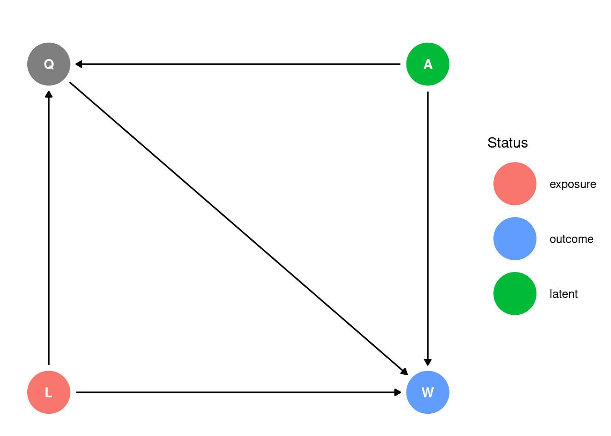
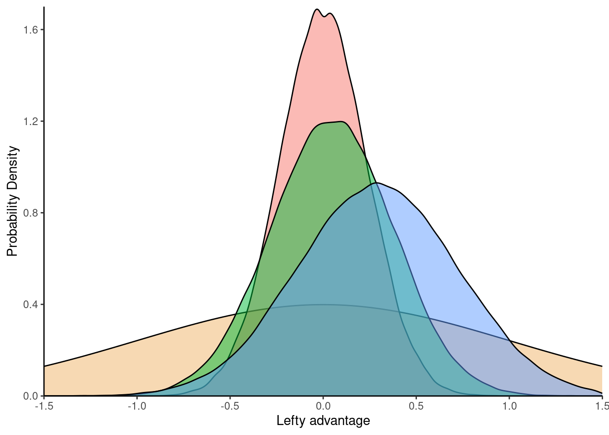

I recently came across an interesting question while working through the problem sets in the Statistical Rethinking course. This problem asks us to estimate the advantage of left-handedness within the UFC based on hand coded UFC data from this paper. The question is motivated by the fact that lefties are over-represented in the UFC (~20% of fighters), as well as other sports like tennis, fencing, etc. The dataset includes info on each UFC fight in the years 2010-2012, including the winner and loser, and the handedness of each fighter
The solution set (and the paper) treat the abilities of each fighter as purely unobserved; i.e. the following causal structure is assumed for the data:
Code
dagify(W~A+L+Q,Q~A+L, exposure ="L", outcome ="W", latent ="A", coords =list( x =c(L =0, W =1, A =1, Q =0), y =c(L =0, W =0, A =1, Q =1)))|>ggdag_status()+theme_dag_gray_grid( panel.grid =element_blank(), panel.background =element_blank())+labs(title='', col='Status')

Graph key:
L: left-handedness, the exposure
A: ability, unobserved
W: winning a UFC match, the outcome
Q: qualification for UFC; this is required for winning a UFC match
Many readers will notice that by considering only fighters who have qualified for UFC, Q, we are here conditioning on a collider.
Although the solution set (and the paper) treat the abilities of each fighter as purely unobserved, we are actually given some limited information on fighter abilities: since some of the fighters fight in multiple matches, we can include this information in the model with a Bradley-Terrey model:
\(\Pr(i > j)\) is the probability of a pairwise comparison of element i vs element j is true; e.g. in an MMA match between fighter i and fighter j, fighter i wins
\(a_i = e^{\beta_i}\), where \(\beta_i\) is a real value assigned to element i; e.g. the skill of fighter i
It seems that this class of models describes the UFClefties question. Andy Milne describes how to parameterize this class of models for brms in this stan forum post; essentially we need a \(\beta\) variable for each fighter with a value of 1 if the fighter won the match, a value of-1 if the fighter lost, and a value of 0 otherwise. Adding handedness gives the following model
\[\operatorname{logit}(\Pr(i > j)) = L + \beta_i - \beta_j\]
Where \(L\) denotes the ‘lefty advantage’ and encodes the diasteriomeric relation of the match; \(L\) takes the following values:
0 when a righty fights a righty or a lefty fights a lefty
1 when a lefty wins over a righty
-1 when a righty wins over a lefty
Are we actually going to get much info on fighter ability from going about it this way? Let’s poke a bit at the data to find out.
Exploratory
Let’s graph the fights in the dataset with each fighter as a vertex, and each fight as an edge:
That might be a bit difficult to see, depending on your screen width; here’s a tabulation of cluster size (the number of fighters connected to one another by any number of fights):
A good chunk of the fighters are unfortunately connected to only a few, and about a fifth are in clusters of size 2; it does look like there’s some good info in the graph structure though. Let’s graph the largest connected group:
To start off with, here’s the model from the paper and the solution set:
Code
model<-brm( formula =bf(Y~0+L, family =bernoulli), prior =prior(normal(0, 1), class =b), data =d, chains =chains, iter =iter, warmup =warmup, seed =(seed<-as.integer(Sys.time())))
The seed used is 1740372201.
To specify the Bradley-Terrey model you might worry that a large formula would be needed; fortunately brms follows the standard Wilkinson formula syntax (e.g. that of the R stats package, nlme, the Bayesian python package bambi, etc), so instead of writing out all of the variables in the formula we can specify the formula with bf(Y ~ 0 + ., family = bernoulli), where . denotes the sum of all variables (other than the response variable, Y); here 0 tells to brms not to automatically add an intercept to the model.
Code
BT_model<-brm( formula =bf(Y~0+., family =bernoulli), prior =prior(normal(0, 1), class =b), data =d, chains =chains, iter =iter, warmup =warmup, seed =(seed<-as.integer(Sys.time())))
The seed used for this one is 1740372274. For fun, let’s re-run the model using only the largest cluster:
Code
d.92<-d[UFClefties$fighter1%in%(as.integer(fighters$connected_N==92)*1:244),]BT92_model<-brm( formula =bf(Y~0+., family =bernoulli), prior =prior(normal(0, 1), class =b), data =d.92, chains =chains, iter =iter, warmup =warmup, seed =(seed<-as.integer(Sys.time())))
The seed used is 1740372443.
Trace and trank plots look fine for these models; they will not be reproduced here.
Results
Posterior probabilities
Here’s a tabulation of the the posterior probabilities with 89% HDI:
And the posterior predictive plot for the lefty advantage:
Code
draws|>ggplot(aes(x =value, fill =Model))+stat_function( fun =dnorm, geom ="area", color ="black", fill =rgb(0.9, 0.5, 0, 0.1), alpha =0.3)+geom_density( alpha =0.5, from =-2.1, to =2.1, n =2048)+xlab("Lefty advantage")+ylab("Probability Density")+theme(# add x & y lines panel.grid =element_blank(), panel.background =element_blank(), # remove gray background axis.line.x =element_line(colour ='black', linewidth =0.5, linetype='solid'), axis.line.y =element_line(colour ='black', linewidth =0.5, linetype='solid'), legend.position ="none")+scale_x_continuous(limits =c(-1.5, 1.5), expand =c(0, 0))+scale_y_continuous(limits =c(0, 1.7), expand =c(0, 0))

Plot key:
Yellow: normal prior
Red: base model
Green: full Bradley-Terrey model (all data points)
Blue: sub-Bradley-Terrey model (including only the 92 inter-connected fighters)
Interestingly, looking at only the 92 inter-connected fighters deviates furthest from the assumptions baked into the prior.
Conclusion
So in this case adding information on fighter ability didn’t affect the posterior distribution much, and probably didn’t contain much information given the small size of the clusters, and low average number of fights for each fighter, but it was an interesting exercise. Some parting thoughts:
The exercise illustrated the limited expressive power of brms relative to Stan and the Rethinking package; models will be difficult to express in brms unless they can be coerced into a design matrix, as Wilkinson notation fundamentally is about converting a formula to a design matrix.
Perhaps the “footedness” of the fighters might provide more info? This would complicate the diasteriomeric relations in each match, as each would then be a relation between four chiral centers, but perhaps the strikes from the lower body are more important than those from the upper body.